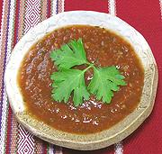

|
Tomato Jalapeño SauceMexico, All - Salsa Tomate Rojo Cocida | ||||
| Makes: Effort: Sched: DoAhead: |
3 cups ** 45 min Yes |
This is a standard sauce used throughout Mexico, with small variations, mainly in what kind of chilis are used (Serranos in some regions, Habaneros in the Yucatán region). | |||
|
2 2 3 1/3 1/4 1/2 |
# oz c c t |
Tomatoes (1) Jalapeño (2) Onion Water (3) Cilantro Salt |
The recipe as given here makes an excellent tortilla dip or sauce for those not wanting a fiery event, but feel free to hot it up if you want to. Make - (45 min)
|